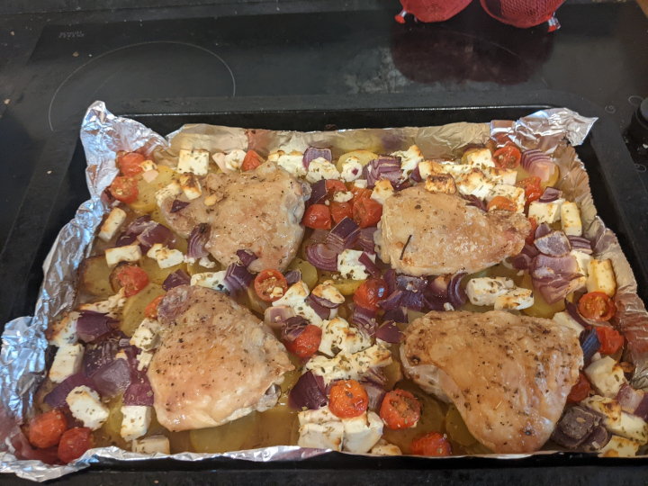

Back to recipes
Greek Style Roast Chicken

A nice and easy one pan in the oven dish with mediterranean flavours. Serves 2
ingredients
- 4 Chicken Thighs. with skin on and bone in
- 400g of potatoes sliced
- 100g of cherry tomatoes halfed
- 1 red onion cut roughly cut into chunks
- 1/2 a pack of oregano leaves (or half a tbsp of dried oregano)
- 150g of feta cut into cubes
- 2 tbsp of oil
- 2 tbsp of red wine vinegar
Method
- Preheat the oven to 200c (180c fan) and season the chicken with salt and coarse black pepper.
- Layer the potato slices into a roasting tin and drizzle with half the oil. Place the chicken thighs on top of the potatoes and brush with the remaining oil. Roast in the oven for 30 minutes.
- Take out of the oven and scatter over the feta, red onion and cherry tomatoes. Sprinkle over with the oregano and red wine vinegar.
- Return to the oven for 25 to 30 minutes until the chicken is golden. Always use a probe to make sure.